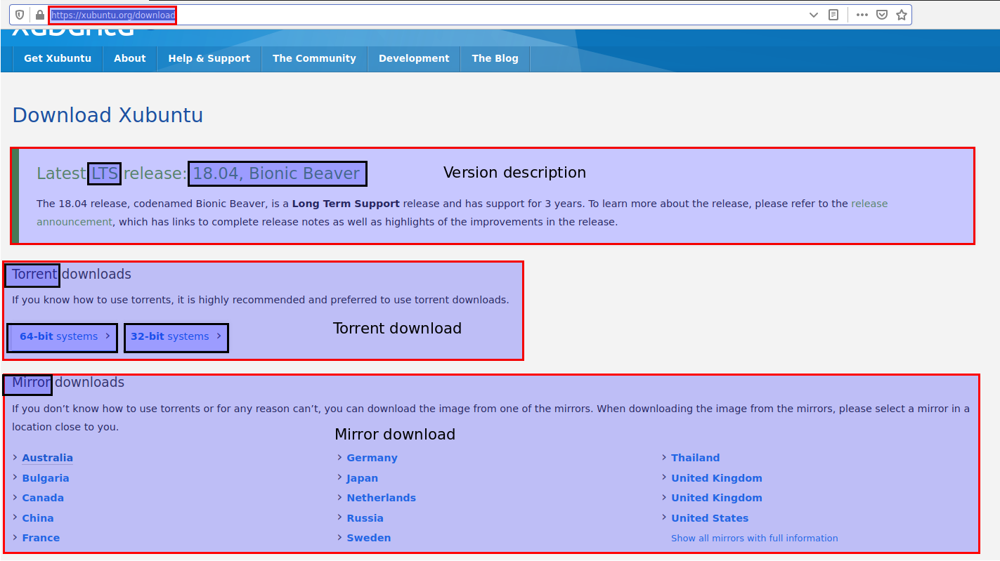
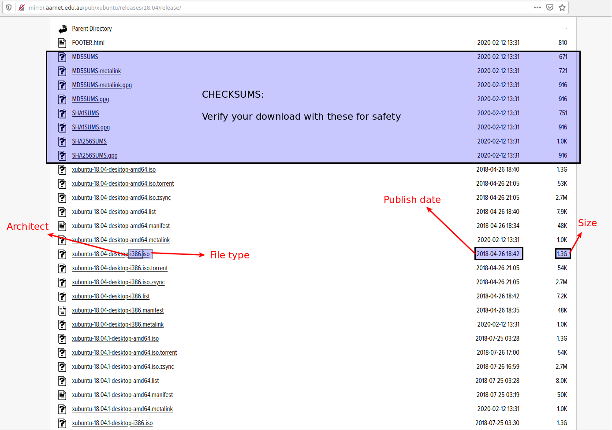

P5
انتخاب و نصب یک توزیع لینوکس در مجازی ساز VirtualBox
انتخاب توزیع
با مراجعه به خط زمانی تولید و انتشار توزیع های لینوکس درک خواهید کرد که دنیای گنو/لینوکس پر از توزیع های متفاوت است که دلیل آن نیاز متفاوت افراد در زمینه های مختلف بوده! بصورت عمده ای میتوان نیاز اشخاص برای استفاده روزانه از یک سیستم را در دسته بندی های حداقلی زیر مشخص کرد:
{kind=link}
- مطابقت با سخت افزار
- فراهم نمودن محیط استفاده
- دارا بودن برنامه های مدرن
- استفاده راحت
- نصب آسان
- امنیت مناسب
- ...
هر شخص دارای یک سری نیازهای خاصی است که میبایست متناسب با آن توزیعی در جهت رفع نیازهای خود انتخاب کند. هر توزیع رویه خاص خودش را مشخص کرده و شما میتوانید با مراجعه به وبسایت مرجع توزیع در مورد فلسفه، نحوه انتشار، میزان مهارت برای استفاده، میزان سخت افزار مورد نیاز، و موارد مختلف دیگر را مورد بررسی قرار داده و توزیع را رد یا استفاده کنید. یا میتوانید از نمونه جوامع دیگر برای گرفتن اطلاعات مورد نیاز خود استفاده کنید. مطابقت با سخت افزار یکی از مهم ترین موارد است چرا که شما در ازای آن هزینه کرده اید و انتظار استفاده از تمامی قابلیت های سخت افزاری سیستم را دارید.
به هر حال در این دوره حد میانی برای استفاده در نظر گرفته شده و به دلیل مجازی سازی مطابقت سخت افزاری اهمیتی ندارد. پس هدف ما فراهم کردن یک محیط عمومی، صرفاً برای یادگیری و آشنا شدن با محیط لینوکس و یادگیری خط فرمان برای استفاده در موارد مختلف است. توزیع های مختلفی وجود دارد که میتوانید از آنها در این زمینه بهره ببرید. لیست من برای انتخاب توزیع مناسب شامل موارد زیر است :
- نصب و استفاده آسان
- توانایی استفاده از سیستم با هر سطحی از دانش
- محیط گرافیکی مناسب
- ابزار های پیش فرض کاربردی
- قابلیت استفاده از انواع مختلف نرم افزارها
- جامعه گسترده(تا در صورت بروز مشکل هر چه سریعتر به جواب برسیم)
- معمول و دارای پشتیبانی مناسب
- مصرف منابع سخت افزاری متوسط
بعد از این همه به توزیع اوبونتو میرسیم که توسط شرکت Cannonical برای چنین استفاده هایی طراحی شده و برای هر نوع کاربری متناسب است. هر چند میتوانید متناسب با نیاز خود توزیع دیگری را انتخاب کنید و از آن استفاده کنید چرا که هر توزیع متناسب با ذائقه کاربری خود مطالب استفاده و راهنماهای مختلف توزیع را در وبسایت مرجع خود فراهم میکند! پس لطف کنید با دقت مطالب مرتبط با توزیع و راهنماهای فراهم شده توسط جامعه کاربری توزیع را مورد بررسی قرار دهید تا موارد مختلف استفاده از آن را درک کنید. اما محیط آموزشی این دوره اوبونتو خواهد بود.
اما میزکار پیش فرضی که همراه با توزیع ابونتو در وبسایت رسمی آن ارائه شده Gnome است ولی یکی از موارد انتخاب توزیع ما مصرف منابع سخت افزاری متوسط(رو به پایین) است! در حالی که میزکار Gnome مصرف منابع بالایی دارد. هرچند که میتوان به راحتی میزکار توزیع را تغییر داد اما راه های بهتری هم برای دانلود توزیع با یک میزکار پیشفرض متناسب با خواسته وجود دارد. گاهاً خود کمپانی ارائه دهنده و گاهاً جامعه کاربری توزیع را با میزکاری غیر از میزکار رسمی توزیع ارائه میدهند که به آنها spin یا flavour گفته میشود؛ یعنی توزیع یکسان است اما محیط گرافیکی و ابزارهای خط اصلی تولید توزیع دچار تغییر شده اند! در مورد اوبونتو جامعه کاربری اسپین(چرخش؟) های متفاوت را ارائه میدهد که متناسب با میز کار نام گذاری شده اند. برای بررسی این اسپین ها میتوانید به این صفحه مراجعه کنید.
در این دوره اوبونتو با میزکار xfce مورد استفاده قرار خواهد گرفت زیرا محیط xfce یک رابط کاربری گرافیکی سبک و جذاب و با قابلیت بالای شخصی سازی است. اگر سیستم شما سخت افزار مناسبی را داراست و توانایی استفاده از میزکارهای مختلف را دارید در این انتخاب آزادانه عمل کنید. به ترکیب های زیر دقت کنید:
البته اوبونتو برای موارد استفاده مختلف دیگر برای کارکردن حرفه ای با محتوای چندرسانهای (multimedia) یا توزیعی یک پارچه برای کاربران چینی دو نمونه طعم/چرخش(flavour/spin) دیگر را با نام های Ubuntu Studio و Ubuntu Kylin ارائه میدهد.
موارد مشابه را میتوانید در جوامع توزیع ها مختلف دیگر مشاهده کنید ؛ مثلاً توزیع فدورا هم به صورت پیشفرض با میزکار Gnome ارائه میشود که با نام Fedora Workstation هم شناخته میشود اما سایر میزکارها و سایر موارد استفاده را نیز پوشش میدهد:
دانلود توزیع
برای دانلود توزیع کافیست به وبسایت رسمی آن مراجعه کنید. وبسایت مرجع توزیع را با یک جست و جوی ساده خواهید یافت. برای دانلود توزیع زوبونتو هم به همین منوال به وبسایت رسمی آن مراجعه کنید. در بخش دانلود آن نسخه های مختلف برای دانلود ارائه شده و حتماً نسخه LTS که مخفف Long Term Support و به معنای پشتیبانی طولانی مدت است را دانلود نمایید. امروز در سال ۲۰۲۰ نسخه 18.04 با پشتیبانی طولانی مدت ارائه شده که همین مورد را انتخاب میکنیم.

توجه کنید گزینه دانلود با Torrent و یا به صورت معمولی برای شما فراهم شده ؛ اگر با Torrent آشنایی ندارید، میتوانید برای دانلود توزیع به صورت معمولی به لیست Mirror ها مراجعه کرده و با انتخاب یکی از آنها لیستی از فایل های دانلود ارائه شده که متناسب با نیاز خود یکی از آنها را دانلود میکنیم؛ توجه کنید که آخرین نسخه ارائه شده توزیع را متناسب با معماری CPU خود دانلود کنید (amd64 : 64bit , i386 : 32bit) :

دانلود VirtualBox
برای دانلود VirtualBox میتوانید به وبسایت مرجع آن مراجعه کنید، اگر نیاز به بررسی نسخه های مختلف آن دارید و مجموعه فایل های متفاوت آن را برای نصب نیاز دارید میتوانید به زیرمجموعه دانلود آن مراجعه کنید، آخرین نسخه را متناسب با نیاز خود انتخاب کرده و فایل های مورد نظر را دانلود کنید؛ موارد زیر را برای استفاده دانلود کنید:
- VirtualBox-XXXX-Win.exe
- Oracle_VM_VirtualBox_Extension_Pack-XXXX.vbox-extpack
- VBoxGuestAdditions_XXXX.iso
که در حال حاضر نسخه 6.1.4 موجود و قابل استفاده است.
نصب و استفاده
در نهایت ما برای نصب و مجازی سازی یک توزیع نیاز به موارد زیر داریم: